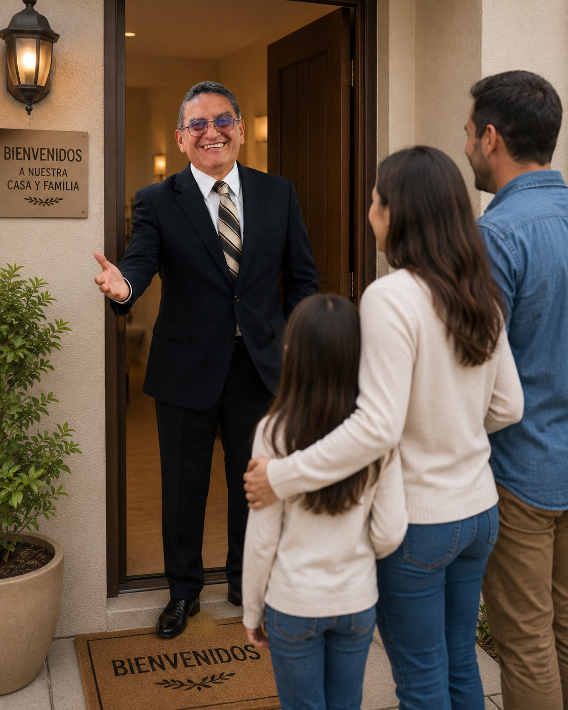

Lunes
◌Oración de Varones
07:00
Reunión de Varones
20:00 – 22:00
Declaración de Fe
Estas verdades guían nuestra enseñanza, nuestra adoración y nuestra vida como comunidad de fe.
Creemos que la Biblia es la Palabra inspirada de Dios, verdadera, confiable y autoridad suprema para la vida y la fe cristiana.
Base bíblica
2 Timoteo 3:16–17; 2 Pedro 1:20–21; Juan 17:17; Isaías 40:8; Mateo 24:35; Salmo 119:105; Hebreos 4:12.
Creemos en un solo Dios eterno, creador de todas las cosas, que existe eternamente en tres personas: Padre, Hijo y Espíritu Santo.
Base bíblica
Deuteronomio 6:4; Salmo 90:2; Génesis 1:1; Mateo 28:19; 2 Corintios 13:14; Juan 1:1–3.
Creemos que Dios creó los cielos, la tierra y todo cuanto existe por el poder de Su palabra. El ser humano fue creado a imagen de Dios, con dignidad, propósito y la responsabilidad de glorificarle y cuidar Su creación.
Aunque el pecado corrompió y distorsionó esa imagen, Dios restaura al ser humano en Cristo. Toda la creación manifiesta Su poder, sabiduría y gloria. Creemos también que Jesucristo, el Hijo de Dios, participó en la creación y sostiene todas las cosas con Su poder.
Base bíblica
Génesis 1:1, 26–31; Génesis 2:7, 15; Génesis 9:6; Salmo 19:1; Salmo 33:6–9; Juan 1:1–3; Colosenses 1:16–17; Hebreos 11:3; Apocalipsis 4:11.
Creemos que el pecado entró al mundo por la desobediencia del ser humano y que todos han pecado y están destituidos de la gloria de Dios.
El pecado trajo separación espiritual y muerte, afectando la relación del ser humano con Dios. Sin embargo, Dios ofrece perdón, reconciliación y vida eterna mediante Jesucristo.
Base bíblica
Génesis 3:1–19; Romanos 3:23; Romanos 5:12; Romanos 6:23; Isaías 59:2; 1 Juan 1:9; 2 Corintios 5:21.
Creemos que Jesucristo es el Hijo de Dios, verdadero Dios y verdadero hombre. Vivió una vida sin pecado, murió en la cruz como sacrificio expiatorio por nuestros pecados, resucitó corporalmente al tercer día, venció la muerte y ofrece salvación eterna a todos los que ponen su fe en Él.
Base bíblica
Juan 1:1, 14; Colosenses 2:9; Hebreos 4:15; Isaías 53:5–6; 1 Corintios 15:3–4; Hebreos 2:14–15; Juan 3:16.
Creemos que el Espíritu Santo es una persona divina de la Trinidad, plenamente Dios, quien habita en cada creyente, convence de pecado, guía a toda verdad, fortalece, santifica y transforma nuestras vidas para reflejar el carácter de Cristo.
Base bíblica
Mateo 28:19; Hechos 5:3–4; Juan 14:16–17, 26; Juan 16:8–13; Romanos 8:9–11; 1 Corintios 6:19; Efesios 3:16; 2 Tesalonicenses 2:13; Gálatas 5:22–23.
Creemos que la salvación es un regalo de la gracia de Dios, recibido únicamente por medio de la fe en Jesucristo y no por obras humanas.
Base bíblica
Efesios 2:8–9; Juan 3:16; Juan 14:6; Romanos 10:9–10; Tito 3:5–7; Hechos 4:12; Hechos 5:31; Hechos 11:18; 2 Timoteo 2:25.
Creemos que la Iglesia es el cuerpo de Cristo, compuesto por todos los que han puesto su fe en Jesucristo, llamado a adorar a Dios, crecer espiritualmente, vivir en comunión y servir.
Base bíblica
Efesios 1:22–23; Efesios 4:11–16; 1 Corintios 12:12–27; Hechos 2:42–47; Hebreos 10:24–25.
Creemos que la Iglesia ha sido enviada al mundo para anunciar el evangelio de Jesucristo, hacer discípulos de todas las naciones, bautizarlos y enseñarles a obedecer todo lo que Cristo mandó, sirviendo con amor y viviendo para la gloria de Dios.
Base bíblica
Juan 20:21; Mateo 28:18–20; Marcos 16:15; Hechos 1:8; 2 Corintios 5:18–20; Gálatas 5:13; Mateo 5:16.
Creemos que Jesucristo instituyó dos ordenanzas para ser observadas por Su Iglesia hasta Su regreso:
Como testimonio público de la fe en Cristo y de la nueva vida del creyente.
Mateo 28:19–20; Marcos 16:16; Hechos 8:36–38; Romanos 6:3–4; Colosenses 2:12.
Como un memorial de Su sacrificio y una proclamación de Su muerte hasta que Él vuelva.
Lucas 22:19–20; 1 Corintios 11:23–26.
Creemos que todo creyente es llamado a vivir una vida de santidad, obediencia y amor, creciendo continuamente en su relación con Dios mediante la obra del Espíritu Santo, quien lo transforma a la imagen de Cristo.
Base bíblica
1 Pedro 1:15–16; Romanos 12:1–2; Gálatas 2:20; Filipenses 2:12–13; Juan 15:4–5; Juan 13:34–35; 1 Juan 2:3–6; 2 Corintios 3:18.
Creemos que el Espíritu Santo concede soberanamente dones espirituales a cada creyente para la edificación de la Iglesia, el servicio a los demás y la gloria de Dios.
Estos dones deben ejercerse con amor, fidelidad y conforme a la enseñanza de las Escrituras, para fortalecer el cuerpo de Cristo y exaltar el nombre de Dios.
Base bíblica
1 Corintios 12:4–11; Romanos 12:4–8; Efesios 4:11–13; 1 Corintios 14:12, 26; 1 Pedro 4:10–11.
Creemos en la segunda venida personal, visible y gloriosa de nuestro Señor Jesucristo, quien regresará para cumplir todas Sus promesas y establecer plenamente Su Reino eterno.
Creemos también en la vida eterna con Dios para todos los que han puesto su fe en Jesucristo, esperanza que fortalece nuestra fe, nos anima a perseverar y nos impulsa a vivir para la gloria de Dios.
Base bíblica
Juan 14:1–3; Juan 3:16; Hechos 1:11; 1 Tesalonicenses 4:16–17; Tito 2:13; 1 Pedro 1:3–5; 1 Juan 5:11–13; Apocalipsis 1:7; Apocalipsis 21:1–4.
Creemos en la resurrección corporal de todos los seres humanos. Los que han puesto su fe en Jesucristo recibirán la vida eterna y vivirán para siempre con Dios, mientras que quienes hayan rechazado a Cristo enfrentarán el juicio justo de Dios.
Creemos en la victoria final de Cristo sobre la muerte y en la promesa de una nueva creación donde Dios habitará eternamente con Su pueblo.
Base bíblica
Daniel 12:2; Juan 5:28–29; Juan 11:25–26; 1 Corintios 15:51–57; 2 Tesalonicenses 1:8–9; Apocalipsis 20:11–15; Apocalipsis 21:1–4.
Nuestra confesión de fe
“Porque de tal manera amó Dios al mundo, que ha dado a su Hijo unigénito, para que todo aquel que en Él cree no se pierda, mas tenga vida eterna.”
“Porque nadie puede poner otro fundamento que el que está puesto, el cual es Jesucristo.”
Bienvenido a CCR
Creemos en el poder transformador de Jesucristo para restaurar vidas, fortalecer familias y dar propósito.
Amamos como Jesús nos amó.
La Biblia es nuestro fundamento.
Caminamos juntos en fe.
Dios tiene propósito para ti.
Visítanos
En Comunidad Cristiana de Restauración queremos que te sientas como en casa desde el primer momento. No importa cuál sea tu historia o dónde te encuentres en tu caminar con Dios: aquí eres bienvenido.
No necesitas vestir de una manera especial ni tener todo resuelto. Queremos conocerte tal como eres.
Niños, jóvenes y adultos son bienvenidos. Queremos crecer y caminar juntos como una familia de fe.
Tu primera visita es para conocernos. La ofrenda es voluntaria y nunca será una condición para participar.
Encontrarás alabanza, enseñanza bíblica y personas dispuestas a escucharte, ayudarte y orar contigo.
Te esperamos
Nuestro encuentro principal se realiza cada domingo. Puedes llegar unos minutos antes para ubicarte con tranquilidad y conocer a nuestra comunidad.
Día y horario
Domingos
10:00 AM – 12:00 PM
Ubicación
Achumani
Calle 11 #92, casi esq. Alexander
No es obligatorio avisarnos. Puedes llegar directamente y serás bienvenido.

CCR La Paz
Hay un lugar para ti.
No queremos que seas solamente un visitante.
Queremos que encuentres una familia.
Conócenos

CCR
Quiénes Somos
En Comunidad Cristiana de Restauración creemos que cada persona tiene valor, propósito y una historia que Dios puede transformar.
Somos una iglesia enfocada en compartir el amor de Jesucristo, acompañar a las familias y caminar juntos en fe, esperanza y restauración.
Cristo es el centro de todo.
Caminamos juntos en amor.
Creemos en vidas restauradas.
Nuestro Pastor

Nuestro Pastor
El Pastor Carlos Sanabria guía a la Comunidad Cristiana de Restauración con un corazón enfocado en Cristo, la Palabra de Dios y la restauración de las personas.
Su deseo es acompañar a cada persona y familia en un camino de fe, esperanza y crecimiento espiritual.
Comunidad y Crecimiento
Cada reunión es una oportunidad para crecer en la fe, conocer la Palabra de Dios y compartir en comunidad.
Te invitamos a compartir un tiempo de alabanza, enseñanza bíblica, oración y comunión.
Cada domingo
10:00
10:00 – 12:00
Dirección
Achumani
Calle 11 #92, casi esquina Alexander
Durante la semana
Contamos con espacios de oración, enseñanza, discipulado y comunidad para diferentes etapas de la vida.
07:00
20:00 – 22:00
07:00
17:00 – 19:00
20:00 – 21:00
17:30 – 21:00
20:00 – 22:00
20:00 – 22:00
Último viernes de cada mes
18:00 – 20:00
16:00 – 18:00
Acompañamiento Espiritual
Estamos disponibles para escucharte, orar contigo y acompañarte en tu proceso espiritual.
Disponibilidad
Lunes, martes y miércoles
Por la tarde
Conversemos
Solicitar una citaMensajes para ti
Acompáñanos en nuestras transmisiones en vivo o disfruta las últimas predicaciones cuando quieras.
Predicación destacada
Último mensaje
Un mensaje para fortalecer nuestra fe y comprender cómo permanecer firmes en Cristo.
Pastor Carlos Sanabria
Comunidad Cristiana de Restauración
Biblioteca de mensajes
Motivo de Oración
Si estás atravesando un momento difícil, necesitas dirección o deseas que oremos por ti, puedes compartir tu petición con nosotros.
Tu petición será recibida con respeto y cuidado.
Nuestro equipo pastoral orará por ti.
Formulario
"Cada uno debe dar según lo que haya decidido en su corazón, no de mala gana ni por obligación, porque Dios ama al que da con alegría."
— 2 Corintios 9:7
Gracias a tus diezmos, ofrendas y donaciones, podemos mantener nuestras puertas abiertas y seguir compartiendo el mensaje de restauración.
Cada aporte, sin importar el tamaño o la distancia, hace una gran diferencia.
Escanea este código QR "Simple" desde la aplicación de tu banco (Bisa, BNB, Mercantil, Sol, etc.) para transferir de forma directa y con 0% de comisión.

* Válido para transferencias de monto libre / abierto.
Para enviar tu ofrenda fuera de Bolivia evitando altas comisiones, te recomendamos usar aplicaciones seguras como Remitly, Western Union o Wise. Al enviar, elige la opción de "Depósito Bancario Directo" e introduce los datos autorizados:
* Las agencias internacionales de envío solicitan el número de CI del destinatario para verificar el depósito en destino.
🙏 Transparencia y Confirmación: Si realizas una ofrenda o diezmo por estos medios, puedes enviar el comprobante o avisar directamente a nuestro equipo pastoral al WhatsApp 67131579 para mantener un registro ordenado y transparente. ¡Dios te bendiga!
Ubicación y Contacto
Ubicación
Achumani Calle 11 #92,
casi esq. Alexander.
La Paz, Bolivia

Nuestra Iglesia
Un lugar para crecer en fe, encontrar comunidad y acercarte más a Dios.